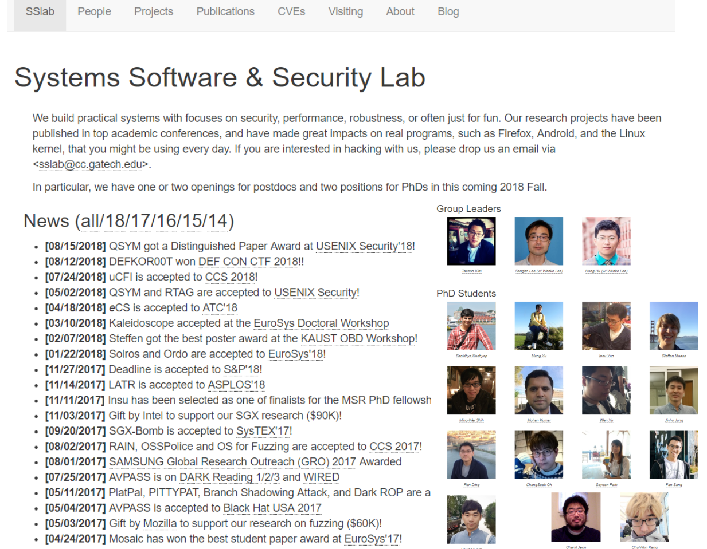
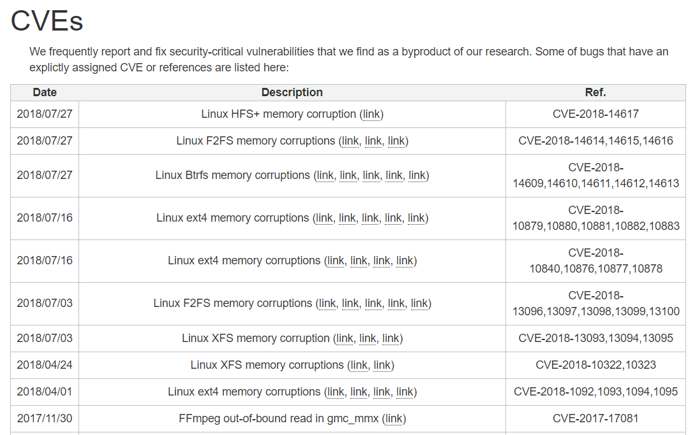
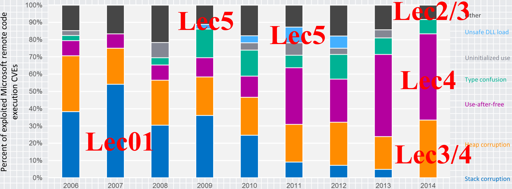

Trends of Vulnerability Classes (by MS)

Ref. Exploitation Trends: From Potential Risk to Actual Risk, RSA 2015
Taesoo Kim
Taesoo Kim
Visit: https://taesoo.kim or https://gts3.org


Ref. Exploitation Trends: From Potential Risk to Actual Risk, RSA 2015

Ref. Exploitation Trends: From Potential Risk to Actual Risk, RSA 2015
Lec01. Lec04.
Ex1. CVE-2017-15118: QEMU Ex1. OpenSSL (CVE-2014-0160)
Ex2. CVE-2014-4975: Wireshark Ex2. Wireshark (CVE-2018-11360)
Ex3. CVE-2015-7547: glibc* Ex3. Linux vmcache (CVE-2018-17182)*
Lec02. Lec05.
Ex1. Linux block (CVE-2013-2851) Ex1. Linux Perf (CVE-2009-3234/+)
Ex2. Linux ext3 (CVE-2013-1848) Ex2. Linux USB (CVE-2016-4482)
Ex3. sudo (CVE-2012-0809)
Lec03.
Ex1. Android (CVE-2015-1538, CVE-2015-3824)
Ex2. Linux Keyring (CVE-2016-0728)